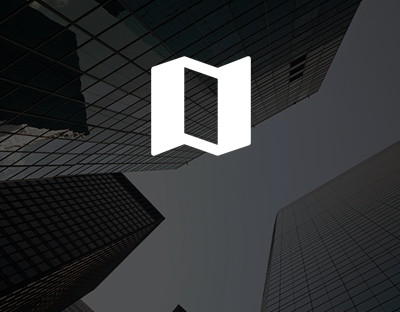
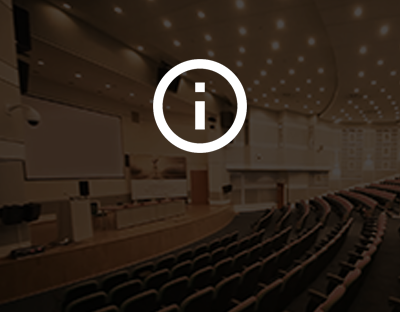

<!--
  Generated template for the MenuPage page.

  See http://ionicframework.com/docs/components/#navigation for more info on
  Ionic pages and navigation.
-->
<ion-header>


</ion-header>


<ion-content>
  <div padding>
    
  </div>
  <ion-grid>
    <ion-row>
      <ion-col col-6>
        <ion-card (click)="this.navCtrl.push('CronogramaPage')">
          
          <div class="card-title">Cronograma do dia</div>
        </ion-card>
      </ion-col>
      <ion-col col-6>
        <ion-card (click)="this.navCtrl.push('PalestrantesPage')">
          
          <div class="card-title">Perfis dos palestrantes</div>
        </ion-card>
      </ion-col>
    </ion-row>
    <ion-row>
      <ion-col col-6>
        <ion-card (click)="callMensagensPage()">
          <div class="mensagensImage">
            <div [class.layer]="isLogado == false">
              <div [class.escureceTexto]="isLogado == false" class="card-title">Chat dos participantes</div>
            </div>

          </div>

          <!---->

        </ion-card>
      </ion-col>
      <ion-col col-6>
        <ion-card (click)="this.navCtrl.push('AperteBotaoPage')">
          
          <div class="card-title">Aperte o botão</div>
        </ion-card>
      </ion-col>
    </ion-row>
    <ion-row>
      <ion-col col-6>
        <ion-card (click)="this.navCtrl.push('InformacoesPage')">
          
          <div class="card-title">Informações úteis</div>
        </ion-card>
      </ion-col>
      <ion-col col-6>
        <ion-card (click)="this.navCtrl.push('SobreOEventoPage')">
          
          <div class="card-title">Sobre o evento</div>
        </ion-card>
      </ion-col>
    </ion-row>
    <ion-row margin-top text-center>
      <ion-col col-3>
        <a href="https://www.facebook.com/WSO2Inc/?hc_ref=ARShutLLDLDHn9s9Z7dEVgXXr08Wf132xTTbDhSZPF2MYtY5eGrNogh_jH7pVwePS_I&__xts__[0]=68.ARASIOz_mAmLWlo1x79j27nkRUMLeUOEWF9Yvl6RSIsvOHvw-WDiHjH1PpLpAD61ZxHvNBxd1Dk8y90mqinqabhjQ9xin5Td1xLn4U_xBezEzXpuYEmxPuwuLHiQa9aUroLQeq1n6gUOuShHI6hQRace25AesdwayClQiGUdSvd1N8-bpn4ZKq4&__tn__=kC-R">
          <ion-icon color="light" name="logo-facebook"></ion-icon>
        </a>
      </ion-col>
      <ion-col col-3>
        <a href="https://twitter.com/wso2_br">
          <ion-icon color="light" name="logo-twitter"></ion-icon>
        </a>
      </ion-col>
      <ion-col col-3>
        <a href="https://www.instagram.com/explore/tags/wso2/">
          <ion-icon color="light" name="logo-instagram"></ion-icon>
        </a>
      </ion-col>
      <ion-col col-3>
        <a href="https://www.linkedin.com/company/wso2-brasil/">
          <ion-icon color="light" name="logo-linkedin"></ion-icon>
        </a>
      </ion-col>
    </ion-row>
  </ion-grid>
  <div *ngIf="isLogado == false" padding>
    <button ion-button block (click)="showEscolhaInscricao()" color="primary">Inscreva-se</button>
  </div>
  <div *ngIf="isLogado == true" padding>
    <button ion-button block (click)="this.navCtrl.push('PerfilUsuarioPage')" color="primary">Acessar Perfil</button>
  </div>

</ion-content>